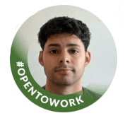

Data Science student. I bring ideas from early prototypes to production. This includes problem identification, data collection, model creation, deployment and maintanance.
Web application that does statistical analysis of stocks
Python - Pandas, Numpy, Matplotlib
Technical indicators make stock portfolios based on user's input risks.
User interface to create an account, build portfolios, and track performance over time.
Monte Carlo Simulations, Alpha generator strategies, risk averaging trading.
Dashboard for data analysis on Restuarant order data.
Python - Pandas, Matplotlib. MySQL. Dash.Plotly & Heroku Client
Studing how to completey linear regression using Linear Algebra.
Using R to do data analysis, from acquiring data, visualzing patterns to creating regression models.
More...
Looking to add relevant experience.
Ultimate Care
09.2023 - 01.2025
Position: Home Health Aide
Trump Links at Ferry Point (Now Ballys)
05.2022 - 01.2024
Position: Pro Shop Associate
2025 - In progress, Masters Program
Masters in Data Science, Juniata College
Coursework: Data Mining, Machine Learning, Data Visualization, Big Data
2019 - 2023, Econ BA Program
Bachelors in Economics, CUNY City College
Specialization: Python for Business Analytics & Quantitative Finance